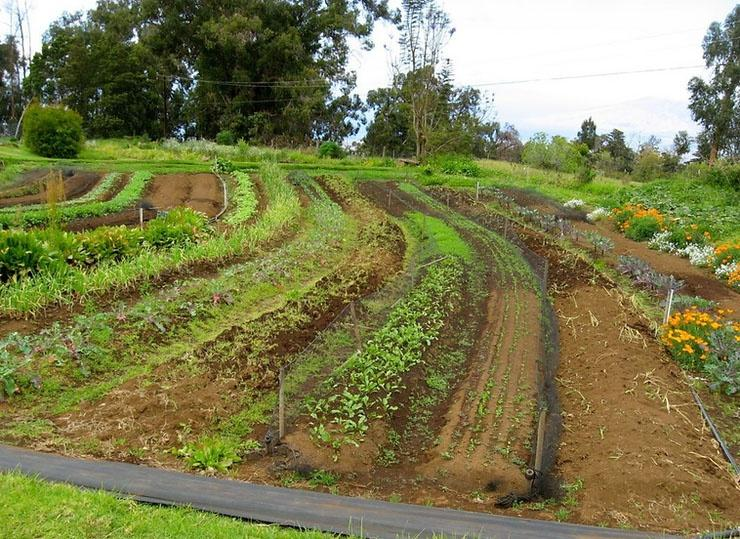

Blog
SOIL CONSERVATION METHODS
PERFECT WAYS OF CONSERVING SOILS IN YOUR GARDEN
Soil conservation is a set of management strategies aimed at preventing soil erosion and maintaining soil health. It involves practices that protect the soil from degradation, improve its fertility, and ensure its sustainable use. Here are some key aspects and techniques of soil conservation:
- Erosion Control: Preventing the removal of the topsoil by water, wind, or tillage.
- Soil Fertility Management: Maintaining or improving the nutrient content and structure of the soil.
- Water Management: Efficient use of water resources to prevent runoff and erosion.
- Land Management: Proper use of land according to its capability to sustain agriculture and forestry.
SOIL CONSERVATION TECHNIQUES

Contour Farming
Contour farming, also known as contour plowing, is a sustainable agricultural practice that involves plowing and planting crops along the natural contours of the land. This method, which aligns with the topography of the terrain, is designed to reduce soil erosion, improve water retention, and enhance overall soil health. By following the natural shape of the land, contour farming creates physical barriers that help to slow down water runoff, preventing the loss of valuable topsoil and maintaining the land’s fertility.
The primary benefit of contour farming is its ability to significantly reduce soil erosion. Traditional plowing methods, which often involve straight-line plowing, can lead to severe erosion as water flows unchecked down slopes, carrying topsoil with it. In contrast, contour farming creates ridges that act as small dams, interrupting the flow of water and reducing its speed. This not only prevents the removal of nutrient-rich topsoil but also reduces the risk of gullies forming, which can further degrade the land.
Improved water retention is another significant advantage of contour farming. By slowing down water runoff, the practice allows more water to infiltrate the soil rather than being lost to evaporation or runoff. This enhanced water infiltration helps maintain soil moisture levels, which is crucial for crop growth, especially in arid and semi-arid regions. As a result, farmers can reduce their reliance on irrigation, conserving water resources and reducing costs.
Contour farming also contributes to the maintenance and improvement of soil fertility. By preventing erosion, it helps retain organic matter and essential nutrients within the topsoil. The practice of contour farming often involves the use of cover crops, which protect the soil surface from erosion, add organic matter, and improve soil structure. Additionally, contour farming can be combined with other sustainable practices such as crop rotation and agroforestry, further enhancing soil health and biodiversity.
Despite its benefits, the implementation of contour farming presents certain challenges. The initial setup requires careful planning and land surveying to accurately determine the natural contours. This process can be time-consuming and may require specialized knowledge and equipment. Moreover, maintaining the contour lines and adjusting them over time to accommodate changes in the landscape can be labor-intensive. Farmers may also need training to adopt and sustain these practices effectively.

Terracing
Terracing is a centuries-old agricultural technique that involves creating stepped levels, or terraces, on sloped land. This method transforms hilly terrain into a series of flat platforms, which significantly reduces soil erosion, conserves water, and improves crop yields. Terracing is especially prevalent in regions with mountainous landscapes, where conventional farming would be impractical.
Terracing is a vital agricultural practice that transforms hilly and sloped land into productive and sustainable farmland. By controlling erosion, conserving water, and enhancing soil fertility, terraces support higher agricultural productivity and contribute to environmental sustainability. Despite the challenges associated with its implementation, the long-term benefits of terracing make it an indispensable technique for farming in mountainous and hilly regions. As the global population continues to grow and the demand for food increases, terracing offers a practical solution for maximizing arable land and promoting sustainable agriculture.

Cover cropping
Cover cropping is a sustainable agricultural practice that involves planting certain crops, known as cover crops, primarily to improve soil health, enhance biodiversity, and manage agricultural pests, weeds, and diseases. Unlike cash crops grown for sale or food production, cover crops are grown to cover the soil, providing numerous environmental and agronomic benefits.
One of the primary benefits of cover cropping is the enhancement of soil health. Cover crops, such as legumes, grasses, and brassicas, are planted during off-seasons when the fields would otherwise be bare. These crops protect the soil from erosion by wind and water, preventing the loss of topsoil and maintaining soil structure. The roots of cover crops help to bind the soil particles together, reducing the risk of erosion and improving soil stability.
Cover cropping also promotes biodiversity both above and below the soil surface. The diverse root systems of different cover crops create a variety of niches for soil microorganisms, fostering a rich soil microbiome that contributes to nutrient cycling and disease suppression. Above ground, cover crops provide habitat and food for beneficial insects, birds, and other wildlife, promoting a balanced ecosystem.
Water management is another significant benefit of cover cropping. The root systems of cover crops improve soil structure, enhancing its capacity to absorb and retain water. This is particularly important in areas prone to drought, as improved water retention helps to maintain crop growth during dry periods. Conversely, in regions with excessive rainfall, cover crops can reduce runoff and prevent soil erosion, protecting waterways from sedimentation and nutrient pollution.
Cover cropping is a multifaceted agricultural practice that offers substantial benefits for soil health, biodiversity, pest management, water conservation, and climate resilience. By incorporating cover crops into their farming systems, farmers can enhance the sustainability and productivity of their land, contributing to a more resilient and environmentally friendly agricultural landscape. Despite the initial investment and management required, the long-term gains in soil health and ecosystem services make cover cropping a worthwhile practice for sustainable agriculture.

Windbreaks
Windbreaks, also known as shelterbelts, are strategically planted rows of trees, shrubs, or other vegetation designed to reduce wind speed and protect soil, crops, livestock, and structures from the damaging effects of wind. These barriers are a critical component of sustainable agricultural practices, offering numerous environmental, economic, and social benefits.
One of the primary functions of windbreaks is soil conservation. By reducing wind speed, windbreaks significantly decrease wind erosion, a process that can strip away nutrient-rich topsoil, reduce soil fertility, and lead to desertification. This protection helps maintain soil structure and health, ensuring that the land remains productive for agricultural use.
Windbreaks also play a role in carbon sequestration. Trees and shrubs absorb carbon dioxide from the atmosphere and store it in their biomass and soil, helping to mitigate the impacts of climate change. Moreover, the roots of these plants can improve soil stability and water infiltration, reducing the risk of flooding and improving water quality.
From an economic perspective, windbreaks can increase crop yields and farm profitability. By reducing wind speed, these barriers lower the rate of evapotranspiration, thereby conserving soil moisture. This conservation means crops require less irrigation, reducing water costs and increasing the efficiency of water use. Furthermore, the microclimate created by windbreaks can lead to more uniform and higher quality crop production.
The social benefits of windbreaks are equally significant. They can enhance the aesthetic value of rural landscapes, making them more pleasant and attractive. This can boost community pride and potentially attract tourism, contributing to local economies.